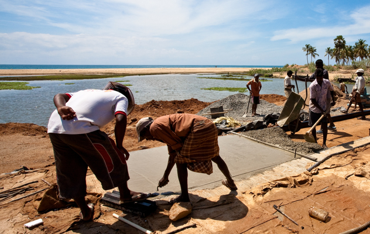

Sri Lanka
- COUNTRY DATA
- ALONG WITH PARTNERS, UNOPS DELIVERED SO FAR US$ 38,222,579 (Total delivery of all currently active projects for all years of implementation activities)
- POPULATION 21.4 million people 2013 estimative Find more details at data.unops.org
Sri Lanka has a documented history that spans over 3000 years. Its geographic location and deep harbours made it of great strategic importance from the time of the ancient Silk Road through to World War II. Sri Lanka is a diverse country, home to many religions, ethnicities and languages. It is the land of the Sinhalese, Sri Lankan Tamils, Moors, Indian Tamils, Burghers, Malays, Kaffirs and the aboriginal Vedda. Sri Lanka has a rich Buddhist heritage, and the first known Buddhist writings were composed on the island. The country's recent history has been marred by a thirty-year civil war which decisively but controversially ended in a military victory in 2009.
Projects
-
UNOPS Sri Lanka Operations Centre is current looking for Environment Especialists
Apply now View other vacancies -
Kripa Shah
PROCUREMENT ASSISTANT"UNOPS employees move to different regions of the world and thus UNOPS is constantly evolving as people bring their experiences and expertise to each region."
See other UNOPS employess opinion
Sri Lanka, officially the Democratic Socialist Republic of Sri Lanka, is an island country in the northern Indian Ocean off the southern coast of the Indian subcontinent in South Asia; known until 1972 as Ceylon, Sri Lanka has maritime borders with India to the northwest and the Maldives to the southwest.
Sri Lanka has a documented history that spans over 3000 years. Its geographic location and deep harbours made it of great strategic importance from the time of the ancient Silk Road through to World War II. Sri Lanka is a diverse country, home to many religions, ethnicities and languages. It is the land of the Sinhalese, Sri Lankan Tamils, Moors, Indian Tamils, Burghers, Malays, Kaffirs and the aboriginal Vedda. Sri Lanka has a rich Buddhist heritage, and the first known Buddhist writings were composed on the island. The country's recent history has been marred by a thirty-year civil war which decisively but controversially ended in a military victory in 2009.
Sectors
The work we do is fulfilling and offers opportunities for professional and personal development. We’re looking for creative, results focused professionals who want to make a difference. The profiles above give an insight into life at UNOPS.